III. Action Recognition
Action recognition is a crucial aspect of our project, enabling the system to identify and interpret human actions in real-time. Our model is designed to recognize the actions performed by a user during the tire-changing process.
This involves 9 distinct actions:
hand_tighten_bolts
initial_wrench_tighten
lift_car_with_jack
loosen_bolts
lower_car
place_spare_tire
remove_bolts
remove_tire
tighten_bolts
1. Data
1.1 Data Collection
To train our action recognition model, we collected a dataset of videos showing the tire-changing process from a first-person perspective.
a. Self-collected videos
We recorded self-collected footage while changing two tires on a Renault Megane 2. The videos were captured using Samsung A50 smartphones with wide camera mode, mounted on the chest to provide a first-person perspective. In total, we recorded 4 videos — 2 per person — with each video lasting approximately 30 to 45 minutes.

b. Public Data
To enhance our model’s performance and generalization, we also utilized publicly available video datasets. These were primarily sourced from YouTube, featuring various tire-changing scenarios and camera angles.

1.2 Data Annotation
All the collected videos were annotated to identify specific actions performed during the tire-changing process. The annotation process involved manually segmenting the videos into short clips corresponding to each distinct action.
We used FFmpeg for this purpose. For each video, the relevant time intervals were determined, and FFmpeg was used to extract clips representing individual actions. Each resulting clip was then saved with a descriptive filename indicating the action performed.
ffmpeg -i "losen.mp4" -ss 00:00:02 -to 00:00:06 "C:\Users\LENOVO\Desktop\S6\Project_S6\Computer_Vision\Changing_tires\Data_Action_Recognition\loosen_bolts\loosen_bolts_6.mp4"
In this example, a segment from 2 to 6 seconds of the losen.mp4 video is extracted and saved as a clip labeled “loosen_bolts”.
The dataset is organized as follows:
actions/
│
├───hand_tighten_bolts/
│ hand_tighten_bolts_01.mp4
│ hand_tighten_bolts_02.mp4
│ ...
│
├───initial_wrench_tighten/
│ initial_wrench_tighten_13.mp4
│ ...
│
├───lift_car_with_jack/
│ ...
│
├───loosen_bolts/
│ ...
│
└───other classes...
the number of clips per action varies, with some actions having more clips than others.
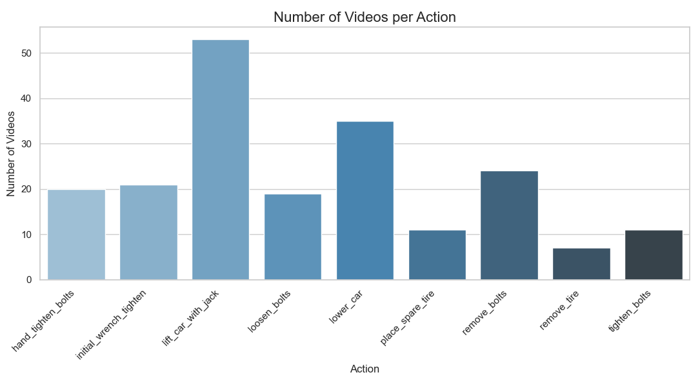1.3 Data Augmentation
Due to the limited amount of real data collected, we applied data augmentation techniques to artificially expand the dataset and improve model generalization. Augmenting the available recordings helps simulate a wider variety of real-world conditions and reduces overfitting during model training.
We chose to augment only the data that we recorded ourselves, as this subset of the dataset most accurately represents real-world tire-changing scenarios.
The augmentation process was implemented using OpenCV and the imgaug library. Each video was loaded, frame-by-frame, and a series of transformations were applied to create new variations. Augmented clips were saved alongside the original videos with filenames indicating the type of augmentation.
The following augmentations were applied:
Piecewise Affine Transformation – Slight geometric distortions.
Gaussian Blur – Simulates defocus or motion blur.
Random Rotation – Rotates frames by a small random angle.
Shear Transformation – Introduces horizontal/vertical tilt.
Brightness Adjustment – Simulates lighting changes.
Contrast Adjustment – Modifies the overall contrast.
Gaussian Noise – Simulates sensor or compression noise.
Coarse Dropout – Randomly masks portions of the frame.
Slow Motion – Duplicates frames to simulate slower actions.
Fast Motion – Skips frames to simulate quicker actions.
Example of augmented filenames:
remove_bolts_13.mp4
remove_bolts_13_gaussian_blur.mp4
remove_bolts_13_brightness.mp4
remove_bolts_13_fast_motion.mp4
...
The augmentation was executed using the following script:
import cv2
import os
import re
import numpy as np
from imgaug import augmenters as iaa
start_indices = {
"hand_tighten_bolts": 9999,
"initial_wrench_tighten": 9999,
"lift_car_with_jack": 9999,
"loosen_bolts": 9999,
"lower_car": 9999,
"place_spare_tire": 9999,
"remove_bolts": 13,
"remove_tire": 1,
"tighten_bolts": 3
}
def slow_motion(frames, factor=2):
return [f for f in frames for _ in range(factor)]
def fast_motion(frames, factor=2):
return frames[::factor]
augmentations = [
('piecewise_affine', iaa.PiecewiseAffine(scale=(0.01, 0.03))),
('gaussian_blur', iaa.GaussianBlur(sigma=(0.3, 0.6))),
('random_rotate', iaa.Affine(rotate=(-5, 5))),
('shear', iaa.Affine(shear=(-10, 10))),
('brightness', iaa.Multiply((0.8, 1.2))),
('contrast', iaa.LinearContrast((0.8, 1.2))),
('noise', iaa.AdditiveGaussianNoise(scale=(5, 15))),
('dropout', iaa.CoarseDropout((0.02, 0.1), size_percent=0.05)),
('slow_motion', 'slow_motion'),
('fast_motion', 'fast_motion')
]
def process_videos(root_dir):
for action in os.listdir(root_dir):
action_dir = os.path.join(root_dir, action)
if not os.path.isdir(action_dir) or action not in start_indices:
continue
start_index = start_indices[action]
video_files = sorted(
[f for f in os.listdir(action_dir) if re.search(r'_(\d+)\.mp4$', f)],
key=lambda x: int(re.search(r'_(\d+)\.mp4$', x).group(1))
)
for video_file in video_files:
match = re.search(r'_(\d+)\.mp4$', video_file)
if not match:
continue
video_index = int(match.group(1))
if video_index < start_index:
continue
video_path = os.path.join(action_dir, video_file)
cap = cv2.VideoCapture(video_path)
frames = []
while True:
ret, frame = cap.read()
if not ret:
break
frames.append(cv2.cvtColor(frame, cv2.COLOR_BGR2RGB))
cap.release()
if not frames:
continue
for aug_name, aug in augmentations:
base_name = os.path.splitext(video_file)[0]
output_path = os.path.join(action_dir, f"{base_name}_{aug_name}.mp4")
if aug_name == 'slow_motion':
augmented = slow_motion(frames, factor=2)
elif aug_name == 'fast_motion':
augmented = fast_motion(frames, factor=2)
else:
det_aug = aug.to_deterministic()
augmented = [det_aug.augment_image(f) for f in frames]
h, w = augmented[0].shape[:2]
fourcc = cv2.VideoWriter_fourcc(*'mp4v')
out = cv2.VideoWriter(output_path, fourcc, 30, (w, h))
for frame in augmented:
out.write(cv2.cvtColor(frame, cv2.COLOR_RGB2BGR))
out.release()
if __name__ == "__main__":
dataset_path = "D:/Actions"
process_videos(dataset_path)
The number of clips per action after augmentation is as follows:
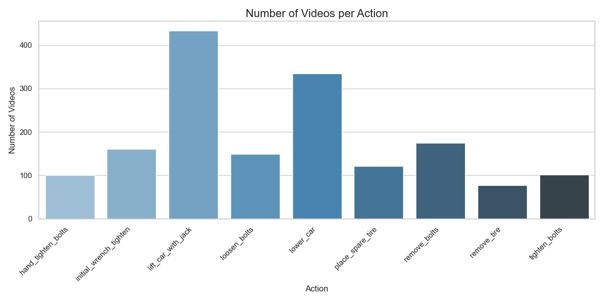1.4 Data Balancing
After applying data augmentation, we observed that the number of video clips per action class remained imbalanced. This imbalance could negatively impact the training of the action recognition model, as some actions would be overrepresented while others underrepresented.
To address this issue, we implemented a balancing strategy to ensure that each action has approximately the same number of video clips. The process followed these principles:
We identified the action class with the fewest total clips (original + augmented).
For all other action classes, we selected a random subset of clips equal in number to this minimum, prioritizing the clips that were recorded by us.
If there were not enough real recordings, we complemented the subset using augmented versions in a round-robin fashion to maintain diversity and avoid overfitting.
This method ensured a balanced and diverse dataset without sacrificing the authenticity of real-world data.
The balancing process was implemented using the following Python script:
import os
import shutil
import re
import csv
import random
from collections import defaultdict, Counter
source_dir = r"D:\Actions"
target_dir = r"D:\Datset_Action_Recognition_Balanced"
os.makedirs(target_dir, exist_ok=True)
original_pattern = re.compile(r"^(.*)_\d{2}\.mp4$")
augmented_pattern = re.compile(r"^(.*)_\d{2}_(\w+)\.mp4$")
action_videos = defaultdict(lambda: {"original": [], "augmented_by_type": defaultdict(list)})
all_counts = {}
# Step 1: Load video metadata
for action in os.listdir(source_dir):
action_path = os.path.join(source_dir, action)
if not os.path.isdir(action_path):
continue
for file in os.listdir(action_path):
full_path = os.path.join(action_path, file)
if original_pattern.match(file):
action_videos[action]["original"].append(full_path)
else:
match = augmented_pattern.match(file)
if match:
aug_type = match.group(2)
action_videos[action]["augmented_by_type"][aug_type].append(full_path)
total = len(action_videos[action]["original"]) + sum(len(v) for v in action_videos[action]["augmented_by_type"].values())
all_counts[action] = total
# Step 2: Determine minimum clip count
min_total = min(all_counts.values())
print(f"[INFO] Minimum total videos per action: {min_total}")
action_to_label = {action: idx for idx, action in enumerate(sorted(action_videos))}
csv_entries = []
readme_lines = ["# Dataset Summary\n"]
readme_lines.append(f"Minimum total videos per action: {min_total}\n")
# Step 3: Balance each class
for action, content in action_videos.items():
os.makedirs(os.path.join(target_dir, action), exist_ok=True)
originals = content["original"]
augmented_by_type = content["augmented_by_type"]
max_select = min(100, len(originals) + sum(len(v) for v in augmented_by_type.values()))
selected_real = []
selected_aug = []
aug_type_counter = Counter()
if len(originals) >= max_select:
selected_real = originals[:max_select]
else:
selected_real = originals
remaining = max_select - len(originals)
aug_pool = []
for aug_type, files in augmented_by_type.items():
random.shuffle(files)
aug_pool.append((aug_type, files.copy()))
while remaining > 0 and any(files for _, files in aug_pool):
for aug_type, files in aug_pool:
if files and remaining > 0:
selected_file = files.pop()
selected_aug.append(selected_file)
aug_type_counter[aug_type] += 1
remaining -= 1
selected_all = selected_real + selected_aug
for src in selected_all:
fname = os.path.basename(src)
dst = os.path.join(target_dir, action, fname)
shutil.copy(src, dst)
csv_entries.append([os.path.join(action, fname).replace("\\", "/"), action_to_label[action]])
# Add stats to README
readme_lines.append(f"{action}:\n")
readme_lines.append(f" Selected real videos : {len(selected_real)}")
readme_lines.append(f" Selected augmented videos: {len(selected_aug)}")
readme_lines.append(f" Selected total : {len(selected_all)}")
readme_lines.append(f" Augmentation breakdown :")
if selected_aug:
for aug_type, count in aug_type_counter.items():
readme_lines.append(f" - {aug_type}: {count}")
else:
readme_lines.append(" - None")
readme_lines.append("")
# Step 4: Save labels.csv
with open(os.path.join(target_dir, "labels.csv"), "w", newline="") as f:
writer = csv.writer(f)
writer.writerow(["video_path", "label"])
writer.writerows(csv_entries)
# Step 5: Save README.txt
with open(os.path.join(target_dir, "README.txt"), "w") as f:
f.write("\n".join(readme_lines))
1.5 Dataset Summary
The final balanced dataset contains approximately 100 clips per action, ensuring a diverse representation of each action type. This balance is crucial for training a robust action recognition model that can generalize well to unseen data.
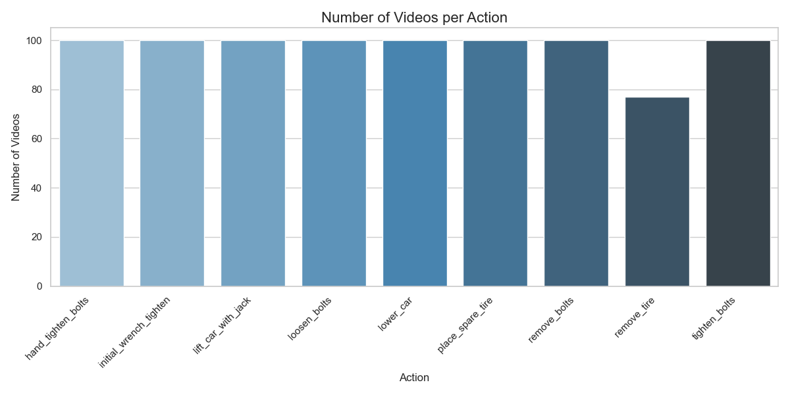The dataset is structured as follows:
Dataset/
│ labels.csv
│ README.txt
│
├───hand_tighten_bolts
│ hand_tighten_bolts_01.mp4
│ hand_tighten_bolts_02.mp4
│ ...
│
├───initial_wrench_tighten
│ initial_wrench_tighten_01.mp4
│ initial_wrench_tighten_02.mp4
│ ...
│
├───lift_car_with_jack
│ lift_car_with_jack_01.mp4
│ lift_car_with_jack_02.mp4
│ ...
│
├───loosen_bolts
│ loosen_bolts_01.mp4
│ loosen_bolts_02.mp4
│ ...
│
├───lower_car
│ lower_car_01.mp4
│ lower_car_02.mp4
│ ...
│
├───place_spare_tire
│ place_spare_tire_01.mp4
│ place_spare_tire_01_brightness.mp4
│ ...
│
├───remove_bolts
│ remove_bolts_01.mp4
│ remove_bolts_02.mp4
│ ...
│
├───remove_tire
│ remove_tire_01.mp4
│ remove_tire_01_brightness.mp4
│ ...
│
└───tighten_bolts
tighten_bolts_01.mp4
tighten_bolts_02.mp4
...
the labels.csv file contains the mapping of video paths to their corresponding action labels, and the README.txt file provides an overview of the dataset, including the number of clips per action and details about the augmentation process. the csv file is structured as follows:
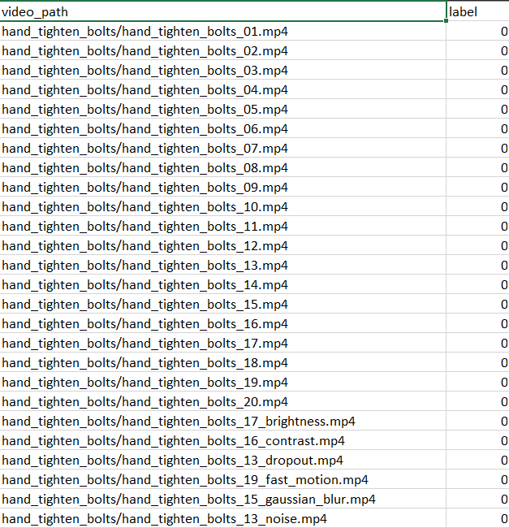2. Models
After exploring various egocentric datasets—starting from the Meccano dataset to the EPIC-Kitchens dataset—we identified several deep learning models that perform well on egocentric video data. Among the most promising architectures are:
SlowFast
MoViNet
EfficientNet

Useful Resources:
To evaluate the performance of these models, we fine-tuned pretrained versions of MoViNet and EfficientNet on our custom egocentric dataset and compared their results.
2.1 EfficientNet
EfficientNet is a mobile friendly pure convolutional model (ConvNet) that proposes a new scaling method that uniformly scales all dimensions of depth/width/resolution using a simple yet highly effective compound coefficient.

We will use the pretrained EfficientNet-B0 model on imagenet, which is the smallest and fastest variant.
a. Video Frame Processing
To prepare the video frames for input into the EfficientNet model, we need to extract frames from the videos and preprocess them.
These are the core utility functions responsible for extracting frames from a single video file and formatting them for the model.
def format_frames(frame, output_size=(224, 224)):
"""
Pad and resize an image from a video.
Args:
frame: Image that needs to resized and padded.
output_size: Pixel size of the output frame image.
Return:
Formatted frame with padding of specified output size.
"""
frame = tf.image.convert_image_dtype(frame, tf.float32)
frame = tf.image.resize_with_pad(frame, *output_size)
return frame
def frames_from_video_file(video_path, n_frames, output_size=(224, 224), frame_step=15):
"""
Creates frames from each video file present for each category.
Args:
video_path: File path to the video.
n_frames: Number of frames to be created per video file.
output_size: Pixel size of the output frame image.
frame_step: The interval between frames to be captured.
Return:
An NumPy array of frames in the shape of (n_frames, height, width, channels).
"""
result = []
src = cv2.VideoCapture(str(video_path))
video_length = src.get(cv2.CAP_PROP_FRAME_COUNT)
need_length = 1 + (n_frames - 1) * frame_step
if need_length > video_length:
start = 0
else:
max_start = video_length - need_length
start = random.randint(0, max_start + 1)
src.set(cv2.CAP_PROP_POS_FRAMES, start)
# ret is a boolean indicating whether read was successful, frame is the image itself
ret, frame = src.read()
if ret:
result.append(format_frames(frame, output_size))
for _ in range(n_frames - 1):
for _ in range(frame_step):
ret, frame = src.read()
if ret:
frame = format_frames(frame, output_size)
result.append(frame)
else:
# If the video ends early, pad with black frames
result.append(np.zeros_like(result[0]))
src.release()
result = np.array(result)[..., [2, 1, 0]] # Convert from BGR (cv2) to RGB
return result
Explanation:
`format_frames`: Takes a single image (a frame), converts its pixel values to a floating-point format (from 0-255 to 0-1), and then resizes it to a fixed 224x224 size while preserving the aspect ratio by adding padding. This ensures all input to the model is uniform.
`frames_from_video_file`: This function reads a video file. To ensure the model doesn’t just learn the beginning of videos, it randomly selects a start point. It then loops through the video, grabbing n_frames (16) at a specified interval (frame_step=15). This “sampling” reduces redundancy and captures motion over time. Finally, it formats each frame and returns them as a single NumPy array.
b. from Video Frames to TensorFlow Dataset
This class acts as a bridge between our raw data files and TensorFlow. It’s a Python generator that yields video frames and labels one by one, which is highly memory-efficient.
class FrameGenerator:
def __init__(self, data_dir, split_df, n_frames, training=False):
self.data_dir = Path(data_dir)
self.split_df = split_df
self.n_frames = n_frames
self.training = training
# Combine the data directory with the relative video paths from the DataFrame
self.video_paths = [self.data_dir / path for path in self.split_df['video_path']]
self.labels = self.split_df['label'].tolist()
def __call__(self):
"""This method is called when the generator is used."""
pairs = list(zip(self.video_paths, self.labels))
if self.training:
# Shuffle the data before each epoch during training
random.shuffle(pairs)
for path, label in pairs:
video_frames = frames_from_video_file(path, self.n_frames)
# 'yield' turns this function into a generator
yield video_frames, label
Explanation:
The __init__ method initializes the generator with the dataset details: the path to the videos and the DataFrame containing the file paths and labels for a specific split (train, validation, or test).
The __call__ method makes the class instance callable like a function. It pairs up video paths with their labels. If it’s for the training set, it shuffles this list to ensure the model sees the data in a random order in every epoch.
It then iterates through these pairs, uses the frames_from_video_file function to get the processed frames for each video, and yields the frames and the corresponding label. yield is like return but it doesn’t stop the function, allowing it to produce a sequence of values over time.
c. Data Loading and Splitting
This section handles loading the labels.csv file and splitting the entire dataset into training, validation, and test sets. This is a crucial step for robust model evaluation.
# Load the CSV file containing video paths and labels
df = pd.read_csv(data_dir / "labels.csv")
# --- Stratified Split: 70% train, 15% validation, 15% test ---
# First, split into 70% train and 30% temporary set
train_df, temp_df = train_test_split(
df,
test_size=0.3,
stratify=df['label'],
random_state=42
)
# Next, split the temporary set equally into validation and test sets
val_df, test_df = train_test_split(
temp_df,
test_size=0.5,
stratify=temp_df['label'],
random_state=42
)
print(f"Train set: {len(train_df)} samples ({len(train_df)/len(df):.1%})")
print(f"Validation set: {len(val_df)} samples ({len(val_df)/len(df):.1%})")
print(f"Test set: {len(test_df)} samples ({len(test_df)/len(df):.1%})")
Explanation:
The code loads the labels.csv file into a pandas DataFrame.
It performs a two-step split to create three datasets. This is a standard practice.
stratify=df[‘label’] is a critical argument. It ensures that the proportion of each class (label) is the same in the training, validation, and test sets as it is in the original dataset. This prevents a situation where, for example, the training set has many examples of one action but the test set has none.
random_state=42 ensures that the split is reproducible. Anyone running this code will get the exact same split.
d. Creating TensorFlow Dataset Objects
This is the final step, where the FrameGenerator is used to create efficient tf.data.Dataset objects. These objects are highly optimized for feeding data into a TensorFlow model during training and evaluation.
# --- Create Generator Instances ---
train_generator = FrameGenerator(data_dir, train_df, n_frames, training=True)
val_generator = FrameGenerator(data_dir, val_df, n_frames, training=False)
test_generator = FrameGenerator(data_dir, test_df, n_frames, training=False)
# --- Define the output signature for the datasets ---
output_signature = (
tf.TensorSpec(shape=(n_frames, 224, 224, 3), dtype=tf.float32),
tf.TensorSpec(shape=(), dtype=tf.int16)
)
# --- Create TensorFlow Datasets from Generators ---
train_ds = tf.data.Dataset.from_generator(train_generator, output_signature=output_signature)
val_ds = tf.data.Dataset.from_generator(val_generator, output_signature=output_signature)
test_ds = tf.data.Dataset.from_generator(test_generator, output_signature=output_signature)
# --- Batch and Prefetch the Datasets for Performance ---
train_ds = train_ds.batch(batch_size, drop_remainder=True)
val_ds = val_ds.batch(batch_size, drop_remainder=True)
test_ds = test_ds.batch(batch_size, drop_remainder=True)
# Prefetch allows the next batch to be prepared while the current one is being processed
AUTOTUNE = tf.data.AUTOTUNE
train_ds = train_ds.prefetch(buffer_size=AUTOTUNE)
val_ds = val_ds.prefetch(buffer_size=AUTOTUNE)
test_ds = test_ds.prefetch(buffer_size=AUTOTUNE)
Explanation:
Instances of FrameGenerator are created for each data split.
tf.data.Dataset.from_generator is the key function that wraps the Python generator. The output_signature tells TensorFlow what kind of data (shape and type) to expect, which allows it to build an efficient computation graph.
.batch(batch_size) groups the individual samples into batches (groups of 2 in this case).
.prefetch(buffer_size=tf.data.AUTOTUNE) is a crucial performance optimization. It allows the data loading pipeline (running on the CPU) to stay ahead of the model training (running on the GPU/TPU), ensuring the model never has to wait for data. AUTOTUNE lets TensorFlow decide the optimal number of batches to prefetch.
e. Model Training
We begin by loading the EfficientNet model with pre-trained weights and adapting it to our specific classification task.
# Create model
inputs = tf.keras.layers.Input(shape=input_shape)
x = tf.keras.layers.Rescaling(scale=255)(inputs)
# Load EfficientNetB0 base model
base_model = tf.keras.applications.EfficientNetB0(
include_top=False,
weights='imagenet',
input_shape=(224, 224, 3)
)
base_model.trainable = False
# Apply TimeDistributed with fixed shape expectations
x = tf.keras.layers.TimeDistributed(base_model)(x)
x = tf.keras.layers.GlobalAveragePooling3D()(x)
outputs = tf.keras.layers.Dense(9)(x) # Assuming 9 classes
model = tf.keras.Model(inputs, outputs)
# Compile model
model.compile(
optimizer='adam',
loss=tf.keras.losses.SparseCategoricalCrossentropy(from_logits=True),
metrics=['accuracy']
)
# Train model
history = model.fit(
train_ds,
epochs=5,
validation_data=val_ds,
callbacks=[
tf.keras.callbacks.EarlyStopping(patience=2, monitor='val_loss'),
tf.keras.callbacks.ModelCheckpoint(
filepath='best_model_train_test_val.h5',
monitor='val_accuracy',
save_best_only=True,
verbose=1
)
]
)
The following are the validation loss and accuracy observed during training:
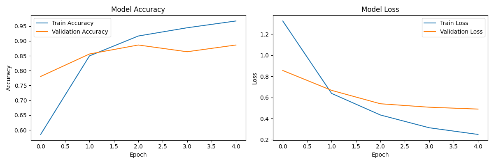f. Model Evaluation
After training, we evaluate the model’s performance on the test set to assess its generalization capabilities.
def evaluate_model(model, test_ds, class_names):
y_true = []
y_pred = []
for videos, labels in val_ds.unbatch():
preds = model.predict(tf.expand_dims(videos, 0), verbose=0)
pred_label = tf.argmax(preds, axis=-1).numpy()[0]
y_true.append(labels.numpy())
y_pred.append(pred_label)
# Print classification report
print(classification_report(y_true, y_pred, target_names=class_names))
# Confusion matrix
cm = confusion_matrix(y_true, y_pred)
plt.figure(figsize=(10, 8))
sns.heatmap(cm, annot=True, fmt='d', cmap='Blues',
xticklabels=class_names, yticklabels=class_names)
plt.xlabel('Predicted')
plt.ylabel('True')
plt.title('Confusion Matrix')
plt.show()
plt.savefig('confusion_matrix.png')
the confusion matrix for the EfficientNet model is as follows:
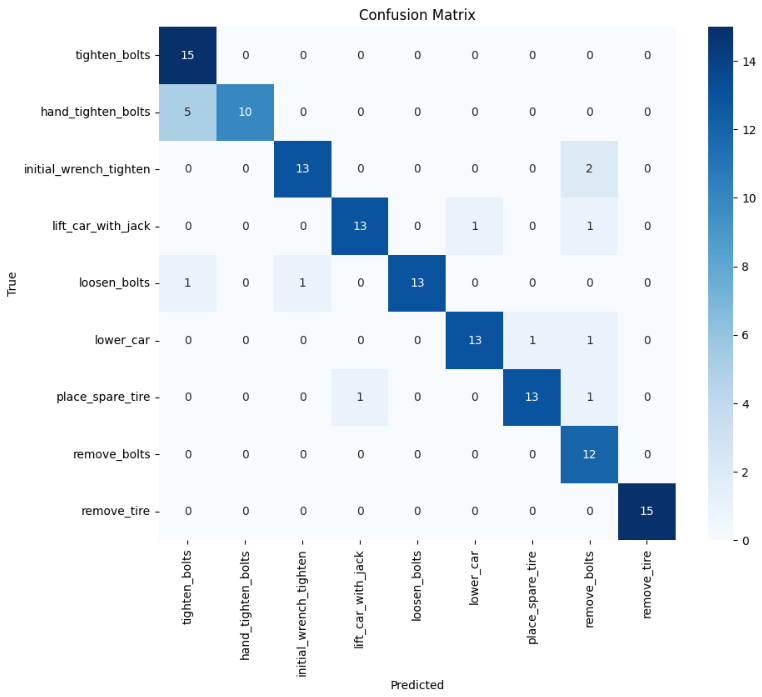the classification report is as follows:
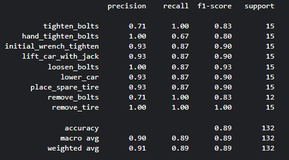2.2 MoViNet
MoViNet is a model designed for efficient video understanding, particularly in mobile and edge devices. It uses a combination of depthwise separable convolutions and temporal convolutions to capture both spatial and temporal features effectively.
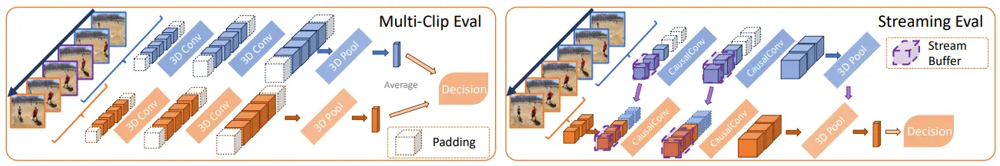a. Video Frame Processing & from video frames to TensorFlow dataset & Data Loading and Splitting
the same work done for EfficientNet applies here as well. The FrameGenerator class and the data loading process remain unchanged.
b. Training the MoViNet Model
we load the MoViNet straming model with pre-trained weights trained on the Kinetics-600 dataset, which is a large-scale video action recognition dataset. and we adapt it to our specific classification task.
# 1. Create a temporary non-causal model to load the full checkpoint
temp_backbone_non_causal = movinet.Movinet(model_id=model_id, causal=False)
temp_model_for_loading = movinet_model.MovinetClassifier(backbone=temp_backbone_non_causal, num_classes=600)
dummy_input_shape_for_loading = [1, n_frames, resolution, resolution, 3]
temp_model_for_loading.build(dummy_input_shape_for_loading)
if checkpoint_path:
print("Loading pre-trained weights into temporary non-causal model...")
load_checkpoint = tf.train.Checkpoint(model=temp_model_for_loading)
status = load_checkpoint.restore(checkpoint_path)
try:
status.assert_existing_objects_matched()
print("Successfully loaded pre-trained weights into temporary model.")
except AssertionError as e:
print(f"Warning: Weight loading status: {e}. Some weights might not have matched.")
status.expect_partial()
else:
print("Skipping weight loading as checkpoint path is not available.")
# 2. Create the backbone for training (causal, but NOT using external states for fit())
training_backbone = movinet.Movinet(
model_id=model_id,
causal=True,
use_external_states=False # Important for training with model.fit()
)
# 3. Create the model for training
# output_states=False because standard loss functions don't expect states
model_for_training = movinet_model.MovinetClassifier(
backbone=training_backbone,
num_classes=num_classes, # Your dataset's number of classes
output_states=False # Important for training with model.fit()
)
# 4. Build the training model
model_for_training.build([None, n_frames, resolution, resolution, 3])
# 5. Transfer backbone weights from the loaded non-causal backbone to the training backbone
if checkpoint_path and hasattr(temp_model_for_loading, 'backbone') and hasattr(model_for_training, 'backbone'):
print("Transferring backbone weights from temporary model to training model...")
try:
model_for_training.backbone.set_weights(temp_model_for_loading.backbone.get_weights())
print("Successfully transferred backbone weights to training model.")
except ValueError as e:
print(f"Error transferring backbone weights to training model: {e}")
else:
print("Skipping backbone weight transfer to training model.")
# 6. Set backbone trainability
model_for_training.backbone.trainable = True
# 7. fine tune the model
num_epochs = 4
loss_obj = tf.keras.losses.SparseCategoricalCrossentropy(from_logits=True)
model_for_training.compile(
loss=loss_obj,
optimizer='adam',
metrics=['accuracy']
)
history = model_for_training.fit(
train_ds,
validation_data=val_ds,
epochs=5,
verbose=1,
)
The following are the validation loss and accuracy observed during training:
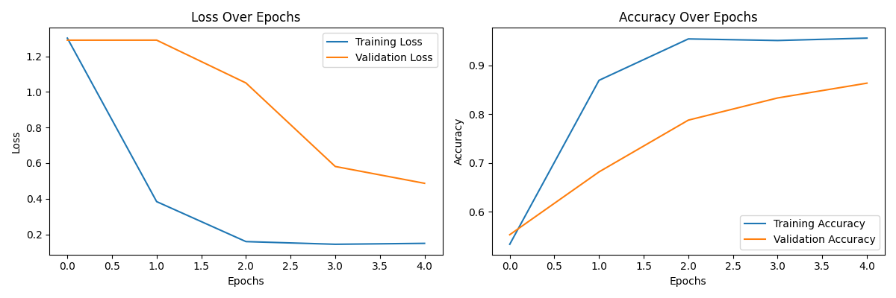c. Model Evaluation
After training, we evaluate the MoViNet model’s performance on the test set to assess its generalization capabilities.
the confusion matrix for the EfficientNet model is as follows:
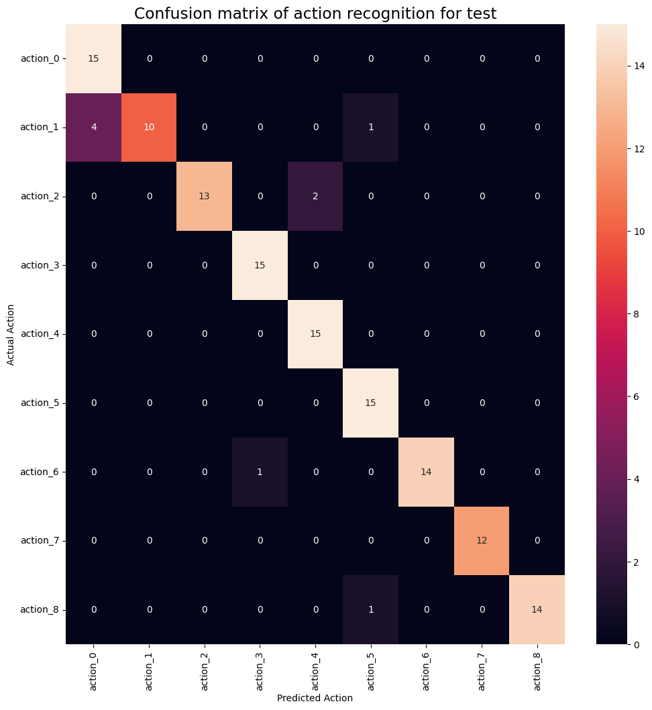the classification report is as follows:
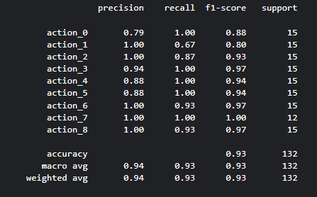e. Movinet inference example
To demonstrate the MoViNet model’s inference capabilities, we can use a sample video from our dataset. the fllowing video is an example of the real time prediction of the MoViNet model on a video clip of the action “hand_tighten_bolts”.
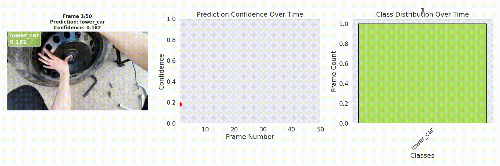3.3 Conclusion
We will take the MoViNet model as the best performing model for our action recognition task, as it achieved a higher accuracy and better generalization on the test set compared to EfficientNet.